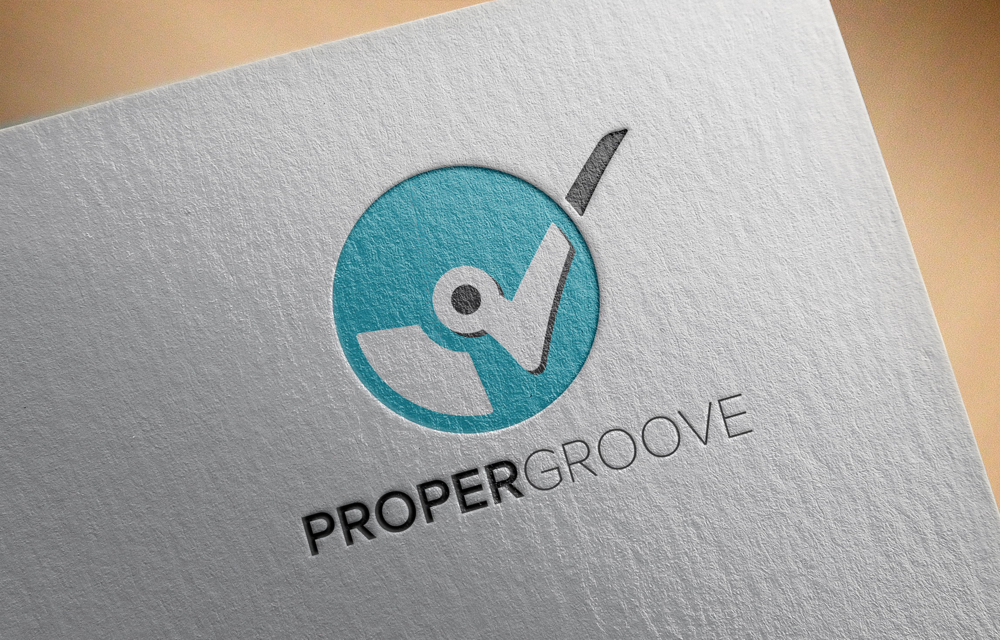
 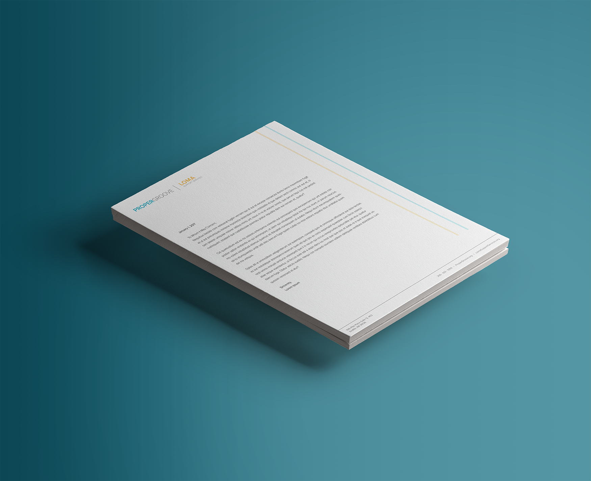
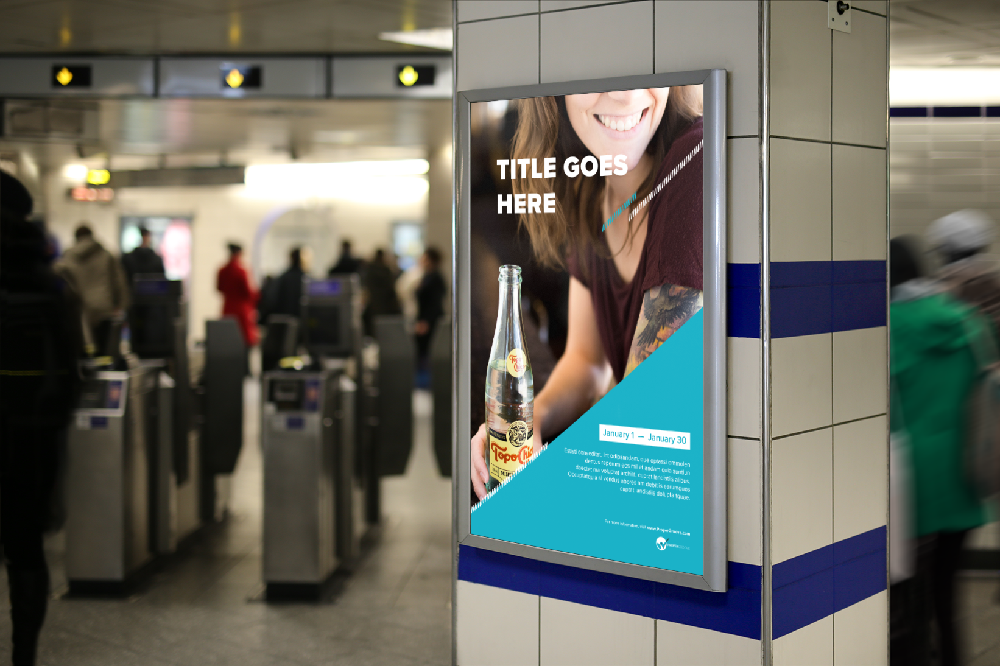
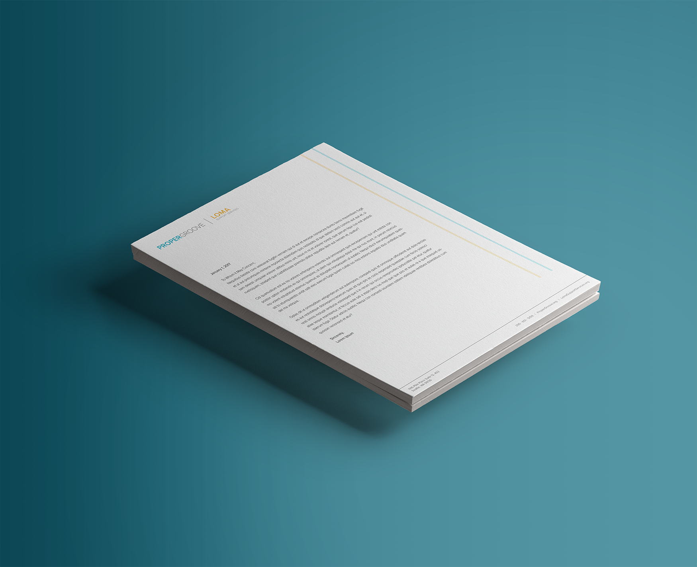
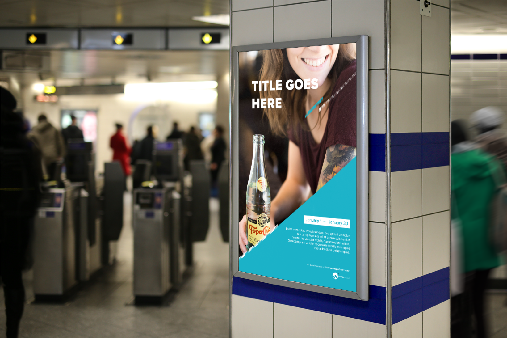
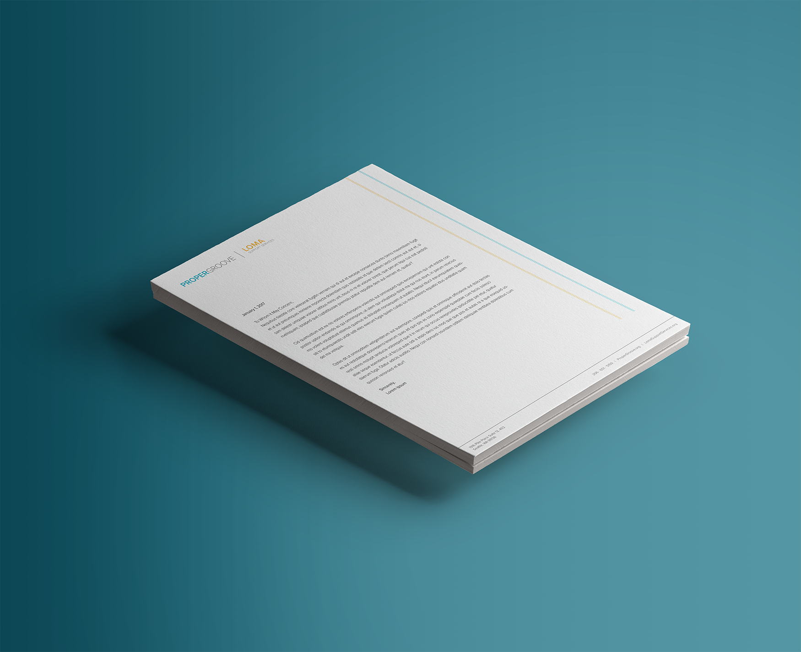
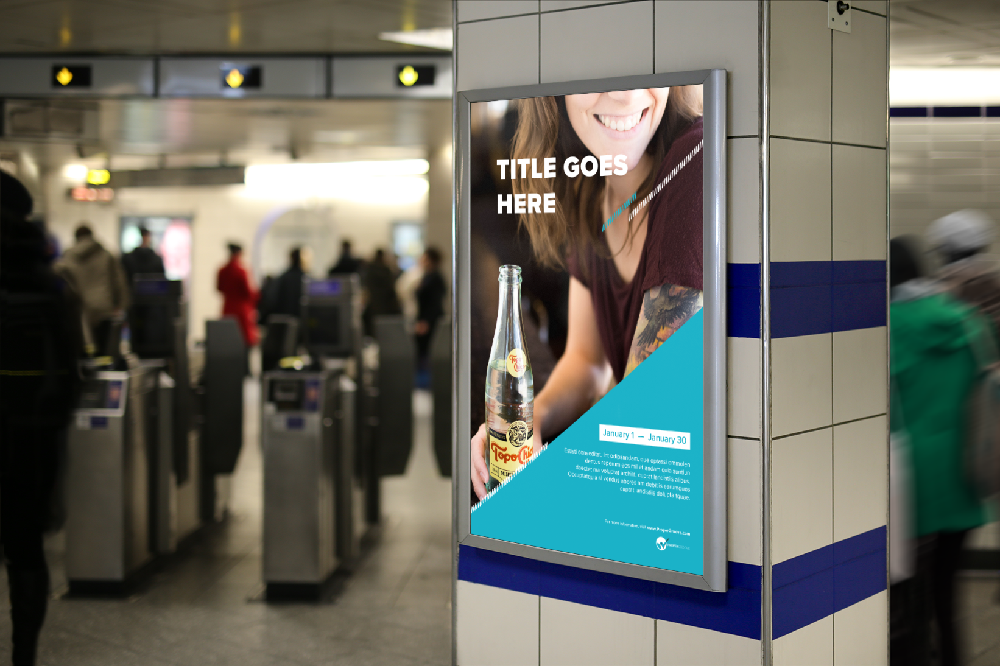
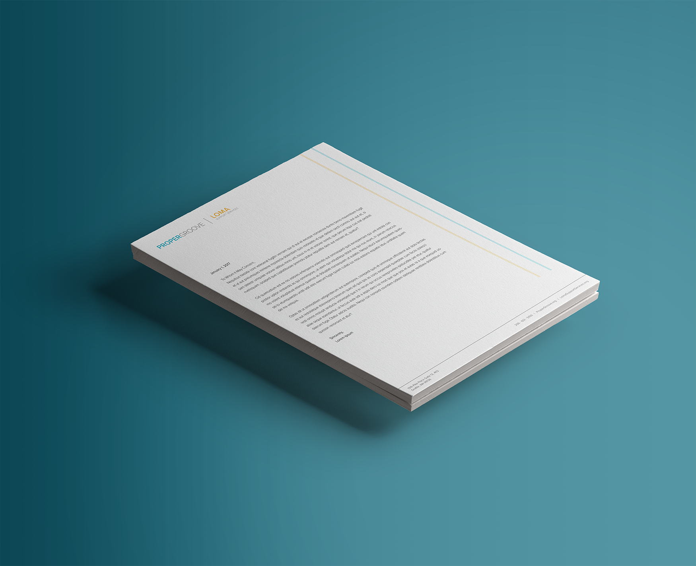
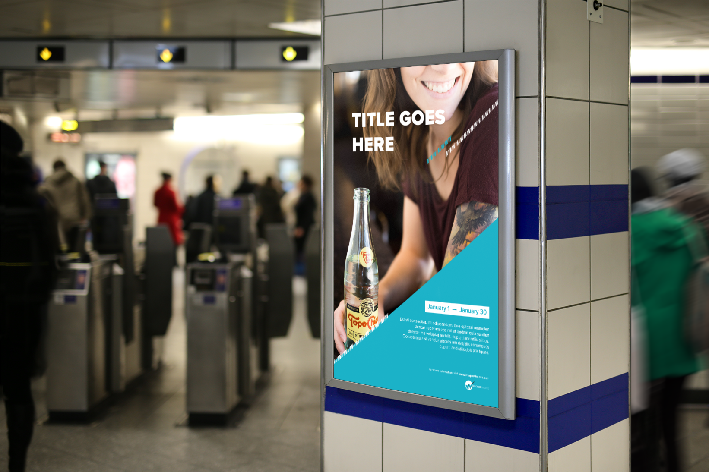
After the introductory meeting with Proper Groove boards of directors discussing their mission and goals for Proper
Groove, we asked them what is important to them when it comes to their Identity? Do they have any example of other
brands that they feel Proper Groove could be similar too? And is there any example of Logos that they like?
They stated that they want their Identity to show strength and of great importance. They want their Logo to stand out
and be noticed when viewed at bars, events, or any social spaces. They also want to make sure that the logo can go
on a diverse range of posters, backgrounds, and other various location. They also stated that they like the simple and
clean modern style logo that work well in squares and rectangle so that it could be placed on letterhead, business
card, and social media profile photo.
Below are some examples of logo that Proper Groove has sent over:
After multiple iterations, Proper Groove felt that the bottom right logo fit their Identity best and gave us the green light to move forward with it and finalize the logo.
After cleaning up the rough edges and finalizing the logo, we moved onto picking the colors for Proper Groove new identity. There was some disagreement at first with the creative team and Proper Groove board of directors. Proper Groove wanted to keep using their muted blue color as the primary color to their Identity.

We stated that, that blue is a very boring and dull color and it doesn’t best represent who Proper Groove is. It’s also
a police blue and it will give people a impression that Proper Groove is a policing organization, which is a bad public
impression especially when this logo will be appearing bars and nightclubs. We believe a brighter tone will better
represent who Proper Groove are.
Below are some examples of color that we believe to best fit Proper Groove:
A decision was made to go with a brighter tone blue color to represent safe and trust-worthy, but yet also fun and inviting. There was also a concern with the previous iteration where the center part does look like a beak to a bird. With the color being very similar to twitter, that beak does remind people of the twitter logo. With the request from the client, a solution to rounding out the center was implemented. Two versions of the logo, a horizontal and vertical version were created to ensure that the brand will look presentable in any environment.
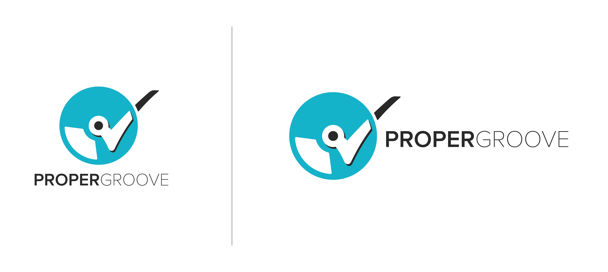The idea is to have a simple clean business card design that would best showcase Proper Groove identity and also provide the important information in a clear legible manners. Below are some initial designs for the business card.
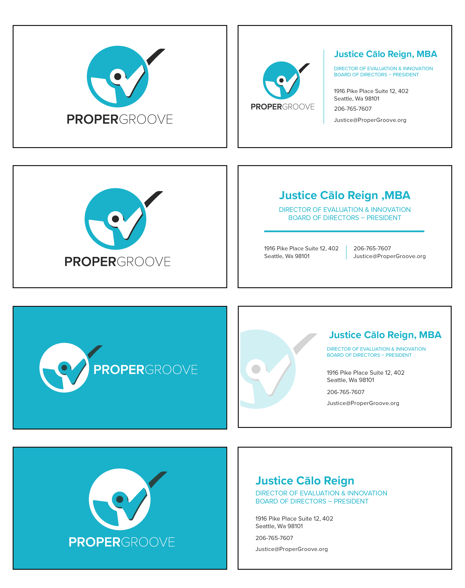Liberation for victims and survivors
Open-hearted service for staff
Meaningful to communities
Authentic for all
LOMA support service is a sub division of Proper Groove that provide support services to victim of sexual violence.
Proper Groove would like a brand identity that would go hand to hand with Proper Groove identity. We propose an
idea to reuse the same logo for Proper Groove but with a different color palette to portray LOMA as a subdivision of Proper
Groove. The idea got the green light by the board of directors to move forward.
The colors yellow and red along with the duo tone heart were introduced to give LOMA a more loving and supportive personality. Two iterations, horizontal and vertical version were created to ensure that the logo will match well with any environments.
Being a nonprofit organization, there is some limitation to production cost. In order to cut cost, Proper Groove want
both the Proper Groove and LOMA Support Service identity to be spotlighted on the business card and letterhead.
We tried explaining that this was really unusual, uncommon and probably never been done before by any other
organization. Their decision was final and there was no changing their mind. This prove to be a real challenge as to
how one would represent two different identity on the same design field.
Below are some examples of iteration that we attempted:
The best solution for this challenge that we believed to work best is to just have only Proper Groove logo spotlighted with both Proper Groove and LOMA type complimenting it. This idea was approved and green lighted by Proper Groove Board of Directors.
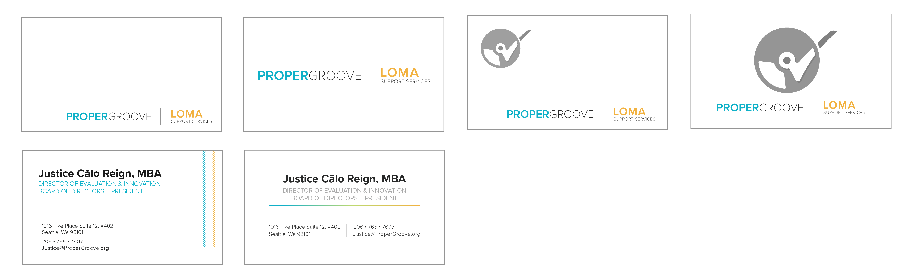Proper Groove wanted to go with these two styles for the letterhead. the one on the right is for legal documents and the one on the left is for all purpose.
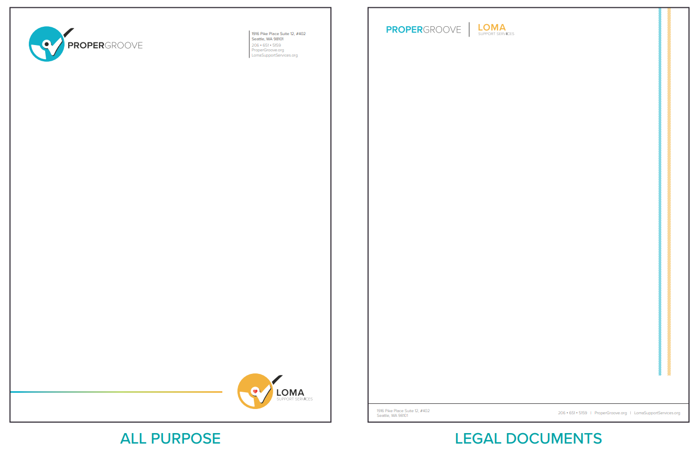Proper Groove also requested us to design some unique poster templates that they could use for PSA and events poster. Some requirements were a spot for headline title, date/time, swappable background picture, and description sections.
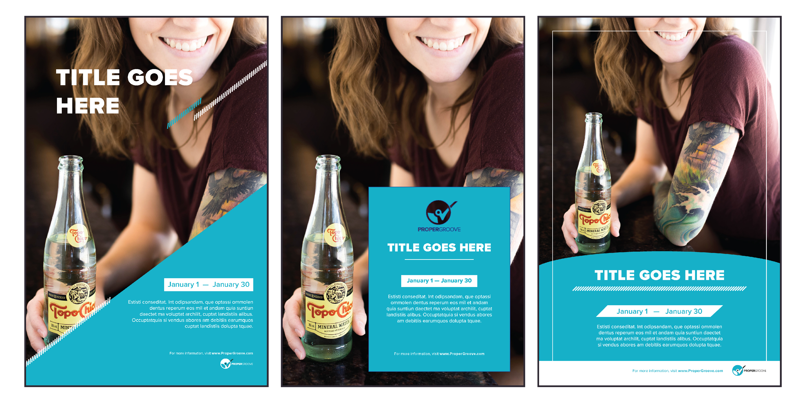To see the full case study, download the pdf file.